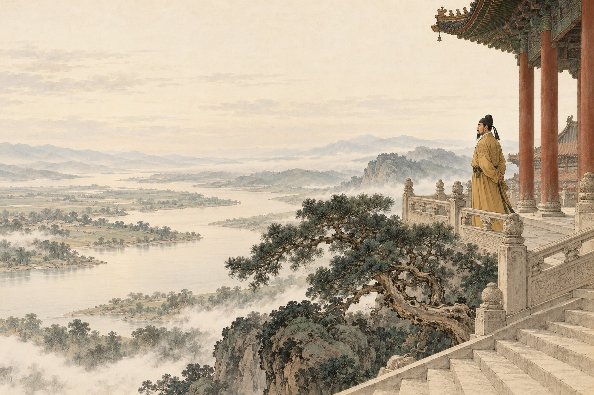
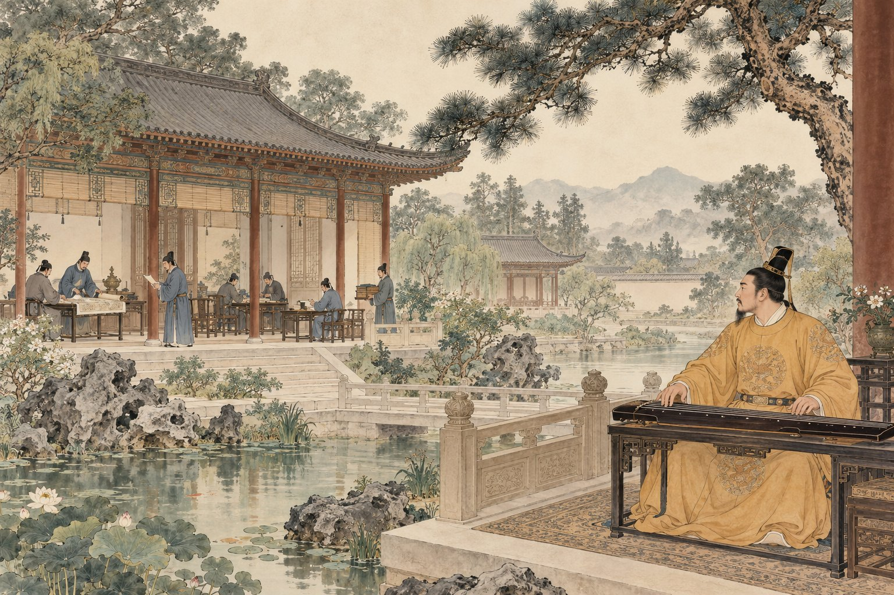

原文点有细线的字词，读音释义即现

慢读先看一幅画，再读一段文。
先找比喻中的关系，再读每一种情境里的自问。
画卷目录从任意一幕，走进故事
给一起读书的大人
建议分两次或三次慢读：先读根源与善始克终，再任选几条十思，最后看分工与用人。无需一次记住十条，重点是能解释一条情境、约束与作用。
白话、赏读和深入讨论按需展开。留给孩子自己的感受，不预设标准读后感。插画是依据文章展开的艺术想象；人物、衣饰、建筑与细节并非历史实景复原。
查看原文版本与资料说明 →停一停 · 你来发现
水墨插画为艺术想象 · 可用键盘 ← → 翻页
把八幕，连成一篇
谏太宗十思疏
〔唐〕魏征
文止于此，回味未止。
把字词，放回句子里
字词小笺
认一个字，也看它在这一句里做什么。
把意思，放回这一句话
根本
先是树木的根。
再借它思考国家的根基。
十思
情境出现：见、将、念、惧……
随后追问：此时应想到什么？
无事
不是没有责任。
先有简能、择善与各尽其职。

合上书，还能带走什么
把一句提醒，变成一次自问
一时做得好，
还要想怎样走得久。
留下一句，属于自己的体会。
从十思中选真正与你的经验有联系的一条，也可以留下不理解之处。
只保存在当前浏览器中。
想聊得更深一点：严厉能换来心服吗？
回看“貌恭而不心服”，再从十思中选一条，说明作者除了威严之外还看重什么。你赞同的依据是什么？
聊过之后，再读一种理解
魏征把民心、德义、节制、纳谏与公正连在一起。威势可能带来表面服从，却不能代替真实信任。文章的历史对象是君主，今天借鉴时可以讨论责任与公平，但不必照搬其等级观念。
走近写下文字的人：魏征
魏征是唐代政治家，以敢于向唐太宗进谏著称。“疏”是臣下向君主陈述意见的文体。这篇文章把劝告写成层层推进的理由：为什么要自省、什么容易改变、可以怎样约束，以及由此期待怎样的治理。
原文与资料 →纸上
再读第一幕 →为一个具体情境写一条“我会先想”。
选一次想多拿一点、快下判断或快放弃的真实情境，用“当……时，我会先想……”写一个可执行的自问，再说明它可能帮助你避免什么。不用凑十条，也不替别人写。
卷末 · 资料与制作
每一篇，都有文字的来处。
原文与版本
采用常见课文全文，参照高校公开古诗文汇编，保留“思国之理”“吴越”“想谗邪”“在君无事”等用字。全文分八幕、三个自然段；与其他版本中的“治”“胡越”“惧谗邪”“君臣无事”等异文不混用。标点按现代阅读习惯整理。
校核来源：高校公开古诗文汇编：《谏太宗十思疏》；古文岛：《谏太宗十思疏》。查阅日期：2026 年 10 月 29 日。古文为公版作品；白话、释义、赏读与共读提示为本册重新组织。
读音与理解
“木之长”读 zhǎng，“浚”读 jùn，“塞源”读 sè，“载舟”读 zài，“壅蔽”读 yōng bì，“黜”读 chù。三驱有不同解释，本册注明而以“游猎有度”贯通。松乔、天命等依古代文学语境理解。
八幅水墨画
插画使用内置 image_gen 工具生成。原图与完整提示词保存在本册制作文件中。水墨画帮助读者想象文章，人物、场所、器物是艺术表现，不是历史照片、科学图鉴或精确实验记录。
离线与书架
单文件 HTML 内含本册插画、样式和交互，可以单独阅读。保留原目录结构时可返回书架或切换篇目。来源链接需要网络。
孩子主动填写的话按篇尝试保存在当前浏览器。移动文件、更换浏览器、设备或隐私模式可能影响保存，请导出重要记录；记录不上传，也不会被打入阅读压缩包。书架不代表孩子已经学习或掌握。
回到封面 →